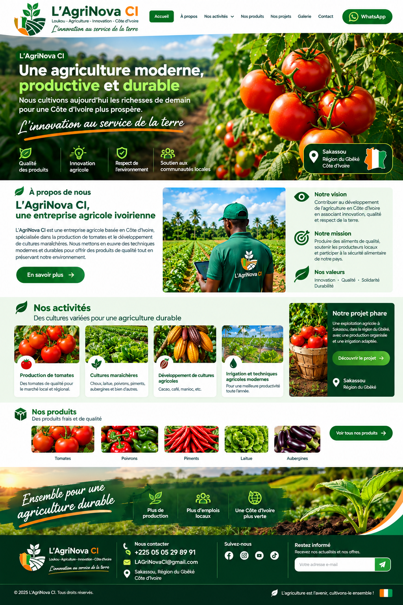

Production de tomates
Une production organisée pour répondre aux besoins du marché local et régional.
Nous cultivons aujourd’hui les richesses de demain pour une Côte d’Ivoire plus prospère.
L’AgriNova CI est une entreprise agricole tournée vers une agriculture moderne, productive et durable. Nous développons des cultures de qualité en associant innovation, bonnes pratiques agricoles et respect de l’environnement.
Notre ambition est de participer au développement agricole de la Côte d’Ivoire et de créer de la valeur autour de nos productions.
Parlons de votre projet →Contribuer au développement de l’agriculture en Côte d’Ivoire en associant innovation, qualité et respect de la terre.
Produire des aliments de qualité et soutenir une agriculture productive et responsable.
Innovation · Qualité · Solidarité · Durabilité
Une production organisée pour répondre aux besoins du marché local et régional.
Choux, laitue, poivrons, piments, aubergines et autres cultures selon les opportunités.
Des projets agricoles pensés pour une croissance progressive et durable.
Des pratiques adaptées pour améliorer la productivité et sécuriser les cultures.
Notre projet agricole à Sakassou, dans la région du Gbêkê, est pensé autour d’une production organisée, de parcelles planifiées et d’une irrigation adaptée.
Échanger sur le projet →
Vous souhaitez en savoir plus sur L’AgriNova CI, nos productions ou nos projets ? Contactez-nous directement.